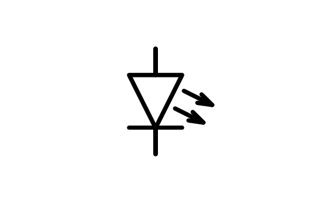
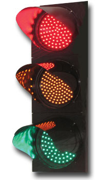
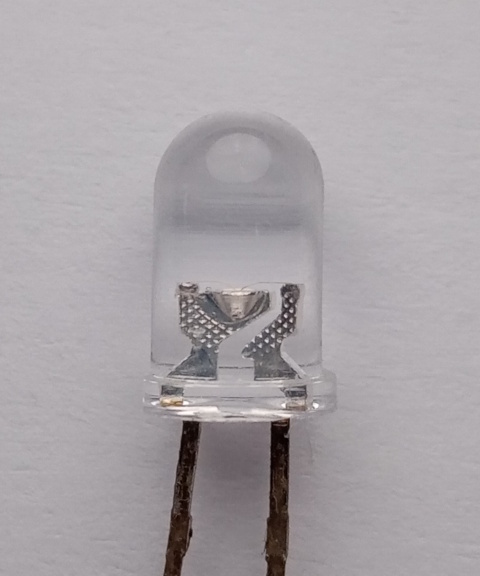

5. El díode LED¶
El `` Diode LED <https://es.wikipedia.org/wiki/led>`__ és un díode emissor de llum (díode emissor de llum). There are versions of various colors, from the infrared LEDs of the remote controls to the ultraviolet LEDs of the plastic resin curing lamps used by dentists.
{kind=link}

Símbol del díode LED.¶
{kind=link}

Semàfor basat en LED de colors.¶
A tot arreu podem veure ledes de colors vermells, verds o blaus fent la funció dels pilots en tot tipus de dispositius electrònics o en semàfors.
Els LED blancs s’han tornat cada cop més eficients, substituint les làmpades de filament incandescents tradicionals fa anys.
Els LED es basen en una tecnologia que encara avança, per exemple, en el OLED <https://es.wikipedia.org/wiki/diodo_org%C3%A1NICO_DE_DE_EMISI%C3%B3N_DE_LUZ> __ de televisors i telèfons intel·ligents de darrera generació.
Polarització dirigida¶
Normalment, els LED tenen una tensió de funcionament fixa que no es pot superar i que és inferior a la tensió d’alimentació. Per evitar que el LED es cremi, hem d’inserir una resistència a la sèrie que limitarà el seu corrent de funcionament.
A la següent simulació podem veure un esquema d’una llanterna LED basada en tres pilas en sèries d’1,5 volts i en un LED blanc de 3 volts de tensió de treball amb un corrent de 50 mil·líferies. La resistència a la polarització és de 30 ohms.
{kind=link}

LED cilíndric de 5 mm de diàmetre.¶
Càlcul de resistència a la polarització¶
Per calcular la resistència necessària que polaritza el LED correctament, heu d’utilitzar la fórmula següent:
On són les variables:
R = Resistència a la polarització del LED en ohms [ω].
V_CC = Tensió d’alimentació en volts [V].
V_led = Tensió de treball del díode LED en volts [v].
I_led = corrent de treball del díode LED en amplificadors [a].
- Exemple 1:
Hem de calcular la resistència a la polarització del LED verd d’un teclat d’ordinador. La seva tensió de treball és de 2,2 volts El seu corrent de treball és de 10 mil·límetres i la tensió d'alimentació és de 5 volts.
Aplicant la fórmula:
- Exemple 2:
Hem de calcular la resistència de polarització del LED blanc que il·lumina una pantalla del telèfon intel·ligent. La seva tensió de treball és de 3 volts, el seu corrent de treball és de 150 mil·límetres i la tensió d'alimentació és de 3,6 volts.
Aplicant la fórmula:
Exercicis¶
Dibuixa l’esquema elèctric d’una llanterna amb el díode LED. Utilitzeu el símbol que apareix al començament de la unitat, amb dues fletxes que indiquen la sortida de la llum del díode.
Calculeu la resistència de polarització del LED vermell d’un ratolí sabent que la tensió de treball és d’1,8 volts, el corrent de treball és de 16 mil·límetres i la tensió d’alimentació és de 5 volts.
Comproveu amb el simulador de circuit <../ circuit/? StartCircuit = buits.txt>`__ que el càlcul és correcte.
No oblideu ** Canvieu la tensió de funcionament del LED **, editant el LED ... Creeu un nou model senzill ... Tensió endavant 1.8 ... corrent a la tensió superior (a) 0.016 ... D'acord.
Calculeu la resistència de polarització d’un controlador d’automòbils compost per dos LED blancs que tenen una tensió de treball de 3 volts cadascun i un corrent de treball de 20 mil·límetres. La tensió d’alimentació és de 12 volts.
Comproveu amb el simulador de circuit <../ circuit/? StartCircuit = buits.txt>`__ que el càlcul és correcte.
No oblideu ** Canvieu la tensió de funcionament dels LED **, editant cada LED ... Creeu un nou model senzill ... Tensió endavant 3.0 ... corrent a la retorn anterior (a) 0.020 ... D'acord.
Extensió¶
- Cerqueu informació sobre la multiplexació dels LED en un ànode comú i en un càtode comú, àmpliament utilitzat en 7 segments.
- Obteniu més informació sobre quina connexió LEDS és amb el charliePlexing per activar diverses ledres amb poques línies de control.